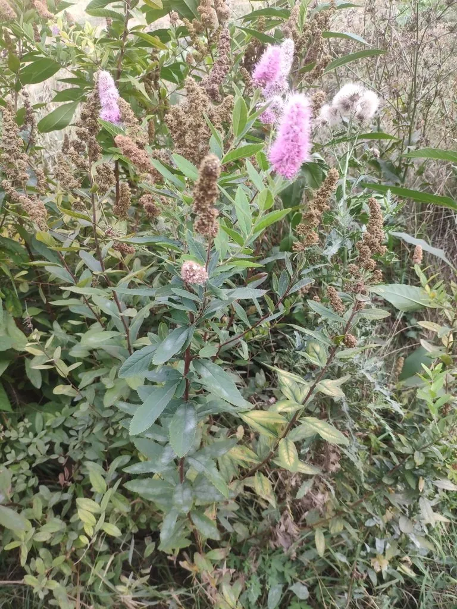

灌木与花木 · 植物界
绣线菊 Spiraea salicifolia

蔷薇科落叶灌木，夏季开粉红色伞房花序，枝条细密、花量繁密，耐寒耐湿，是北方湿地与庭院常见的观花灌木。
- 分类
- 门被子植物门纲木兰纲目蔷薇目科蔷薇科属绣线菊属
- 栖息环境
- 溪边、湿地、林缘与庭院，喜光耐湿
- 地理分布
- 中国东北、华北；朝鲜半岛、日本、俄罗斯远东地区
- 保护级别
- 暂无评估；中国未列入国家重点保护野生植物名录
物种志
绣线菊为蔷薇科绣线菊属落叶灌木，高 1–2 米，枝条细长，幼枝被短柔毛。叶互生，披针形至长圆状披针形，边缘具尖锐锯齿。伞房花序顶生，花小，粉红色至淡紫红色，花期 6–8 月；果实为蓇葖果，果期 8–9 月。
绣线菊原产中国东北、华北及朝鲜半岛、日本、俄罗斯远东地区，生于溪边、湿地与林缘。它喜光，也耐半阴，耐寒、耐湿，适宜疏松肥沃、排水良好的土壤。枝条细密、花量繁密，夏季粉花成片，是北方湿地与庭院常见的观花灌木；也常植于水岸与花境。栽培以分株和扦插繁殖为主，花后修剪可促进新枝萌发，冬季无需特殊防寒，是北方低维护的观花灌木。
形态与习性
- 株高1–2 米，枝条细长
- 花期6–8 月，粉红色伞房花序
- 果期8–9 月，蓇葖果
- 光照喜光，也耐半阴
- 水分耐湿，也耐旱
- 土壤疏松肥沃、排水良好的壤土
- 主要用途湿地与庭院观花，水岸绿化
趣味知识
- 绣线菊的花序由许多小花组成，远看像一条条粉色绣线。
- 它耐寒耐湿，适合种在北方溪边和湿地边缘。
- 绣线菊是蜜源植物，花期能吸引大量蜜蜂和蝴蝶。
- 花后及时修剪，可促进新枝萌发和翌年开花。